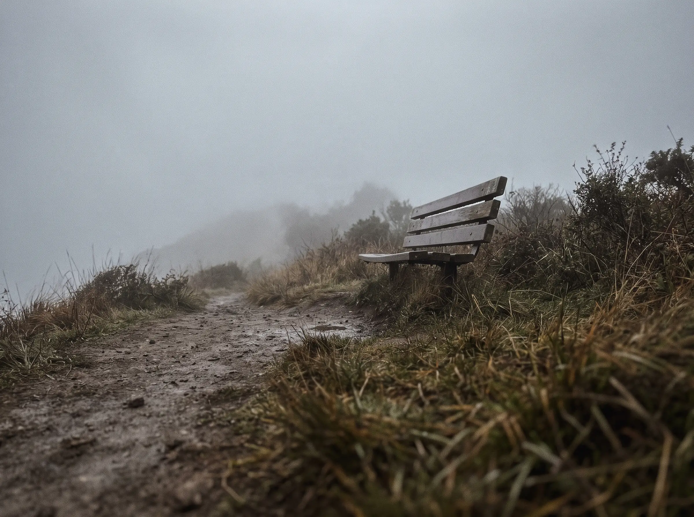
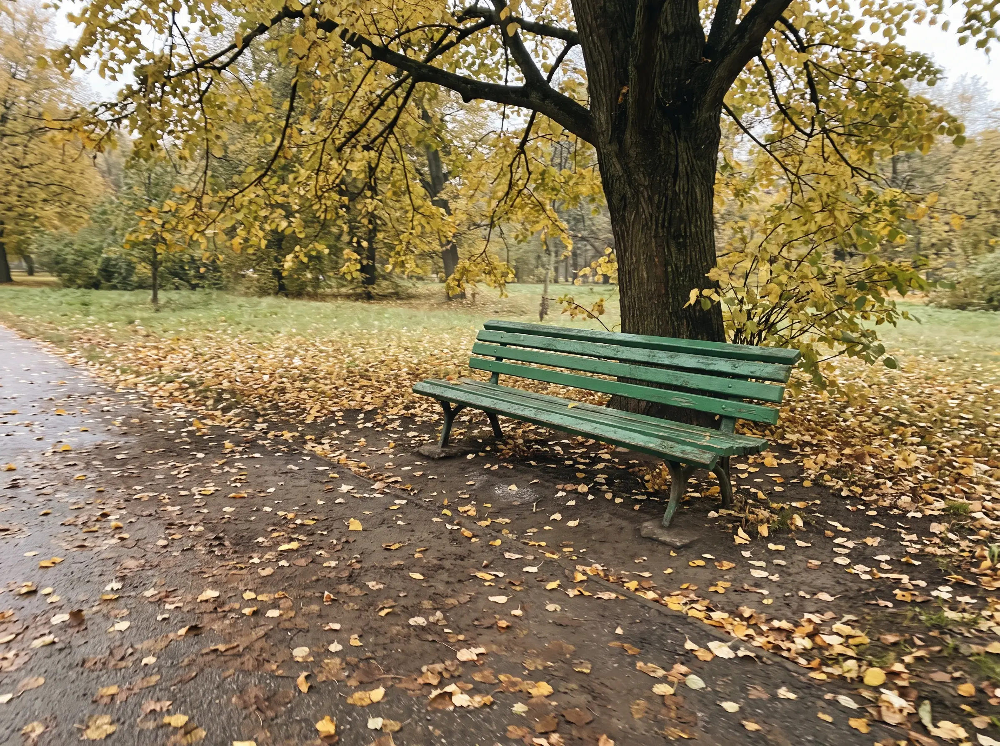

Bench
River wall, after work
A@ade.walks77
A bench with the whole city in it. A flat rock above the cloud. Someone marks it with a photo, drops a pin, and everyone else gets to sit there too.
The one with the whole city in it

Viewpoint
BenchEvery map already knows where the benches are. None of them know which ones are any good.
That part only exists in people’s heads — the one your neighbour walks to on a Sunday, the ledge your climbing partner stops at every time. Perch is where that gets written down: you drop a pin, add a photo or a short video, and it joins a map anyone can open.
Follow the people whose taste you trust and their finds turn up in your feed. Save the ones you want to reach. The map gets better every time somebody sits down.
Open the map. Every spot people have marked around you, with the photo they took from it.
This is the part the app cannot do for you. It is also the entire point.
Drop a pin, take a photo or a few seconds of video, name it. Ten seconds and it is on the map for everyone.
Benches are where this started, but nobody on a ridge cares whether the thing they are sitting on was installed by a council.
Parks, promenades, bus stops, churchyards. The classic.
Anywhere the reason to stop is what you can see.
A log, a boulder, a wall halfway up the climb.
Somewhere to put lunch down.
Bothies, bus shelters, anything with a roof when it turns.
Mark it anyway and tell us what it is.
Trail apps route you to a summit. They will not tell you there is a flat rock forty minutes up with the whole valley in front of it, or that the bench at the col is the only shelter for an hour in either direction.
Marks work offline — take the photo with no signal, and it uploads when you drop back into service. Save a route’s spots before you set off and they are on your phone at the top.
No ads on a map about quiet places. Marking is free forever, because marking is what makes the map worth opening.
Free
Everything that fills the map.
€3.50/month
Or €29 a year.
Later
Councils and trail associations keep asking where people actually stop. We will have the answer before we sell it.
Tell us where you walk and we will open your area next. First hundred people in each city get Pro for a year.